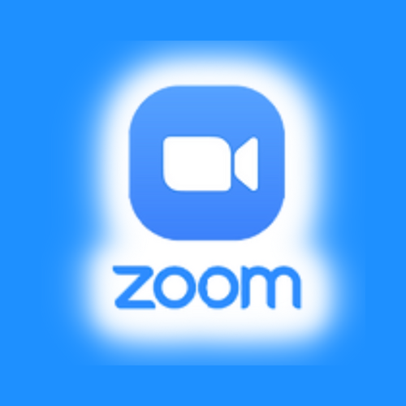

logo de la plate forme:

nom du reseau social:
ZOOM
nom du createur:
Eric Yuan
slogan:
Zoom, we care (Zoom, nous prenons soin de vous)
le slogan rappelle que, au plus fort de la crise du Covid,
Zoom a joué un rôle clé dans la survie de l'activité économique et
dans le maintien d'un lien social entre les Français.
nombre de membre (au moment de mes recherche):
En février dernier, les analystes du centre Bernstein Research
ont estimé que Zoom avait attiré plus de nouveaux utilisateurs durant les deux premiers mois de 2020 (2,22 millions) que
sur toute l’année 2019 (1,99 million). Au total, ils ont indiqué que Zoom comptait en février, près de 13 millions d’utilisateurs actifs, en hausse de 21% par rapport à l’année précédente.
lieu du siege social:
san jose au Etats unis
pays d'origine:
Etats unis
modèle economique:
sisteme d'abonnement pour avoir acces a des fonctionaliter plus avancer ou pour avoir la possibiliter d'avoir plus de personne ou plus de temps das une visio conference
type de raiseaux/media social:
discution et conference en ligne
: